This summary highlights the key discussions from the lecture video, with visual frames captured at important moments.
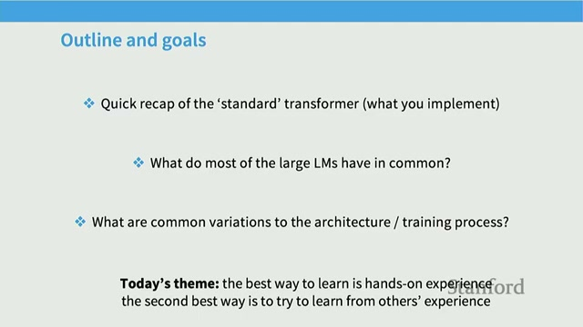
Welcome to today’s lecture! In this session, we will delve into the intricate details of transformer architecture and the various training choices that come with it. It is essential for you to update your assignment code from the course website to ensure you have the latest information and resources.
The primary aim of this lecture is to:
During this lecture, we will focus on:
Please keep the following points in mind:
We look forward to an engaging and informative session!
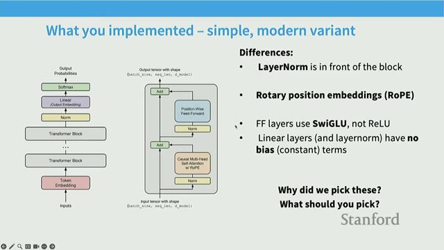
This section reviews the original Transformer structure and explains the course implementation variant. The instructor highlights the standard blocks that make up the architecture:
Additionally, key changes that students implement include:
Modern transformer variants tweak many internal choices, including:
The course implementation follows a widely used approach, ensuring students gain practical insights into these modifications.
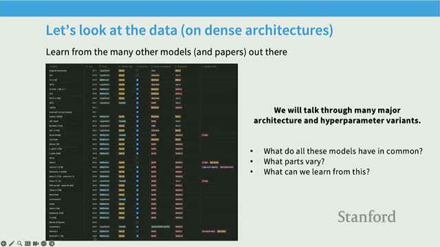
The instructor surveys a variety of recent large language model (LLM) papers, highlighting recurring patterns across model releases. This survey emphasizes that while some design choices converge and become common, many others continue to vary. By studying multiple models, we can identify what truly matters in model design.
Over the years, various models have experimented with different options, including:
However, many models are now converging on similar defaults. Collecting evidence from these models aids in selecting sensible defaults rather than relying on guesswork for hyperparameters.
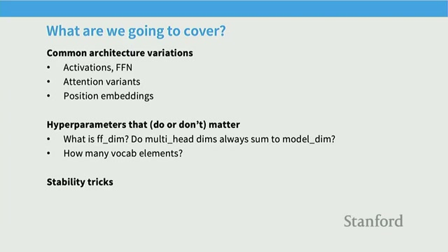
This lecture segment previews three main parts that will guide our exploration of transformer architectures:
The instructor will outline key subtopics including:
The lecture will follow this structure:
Be aware that some topics, particularly Attention Variants, may be covered at the end of the lecture if time permits. This lecture is content-heavy, so we will move swiftly through the material.
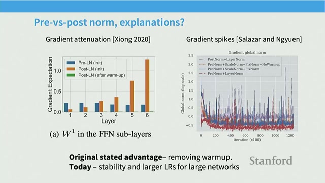
This section explains the placement of layer normalization in neural networks and the shift from post-norm to pre-norm configurations. The pre-norm approach simplifies training without the need for special warm-up procedures and helps to reduce loss and gradient spikes. A newer variant, known as the double norm, incorporates layer normalization both before and after blocks to enhance stability in large models.
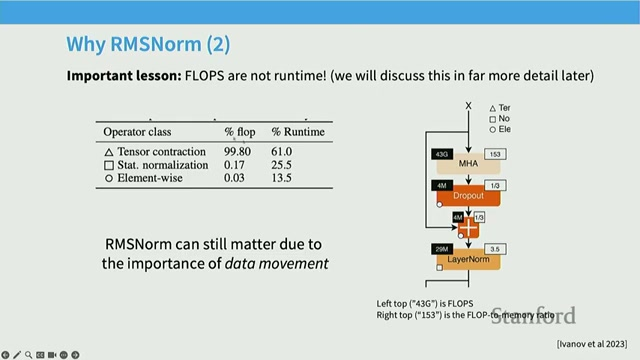
This section delves into the mathematical principles behind LayerNorm, the transition many models have made to RMSNorm, and the rationale for the removal of bias terms in contemporary architectures.
RMSNorm offers a simpler and slightly faster alternative to LayerNorm by eliminating mean subtraction and bias shifts. This simplification not only enhances computational efficiency but also contributes to optimization stability and reduces memory movement.
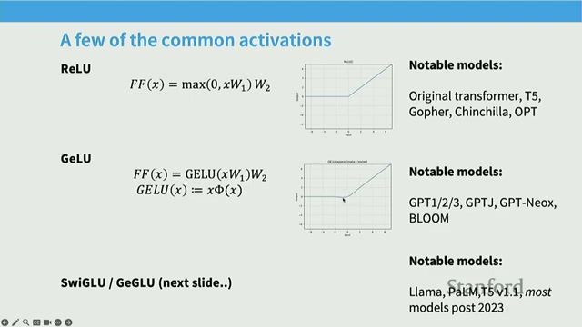
This section reviews activation functions and explains why gated linear units (GLUs), such as SwiGLU, have become prevalent in modern neural networks. GLUs enhance the activation process by multiplying an activation by a learned gate term on an entry-wise basis. Empirical studies indicate that GLU variants typically result in lower loss and improved downstream performance, leading to their widespread adoption in contemporary large language models (LLMs).
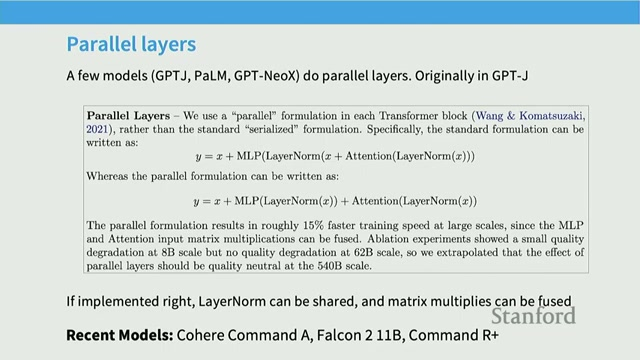
This section contrasts serial transformer blocks (attention then MLP) with parallel block designs (compute attention and MLP in parallel and add results). Parallel blocks can improve system efficiency by fusing computations but may be less common; most recent models still use serial blocks.
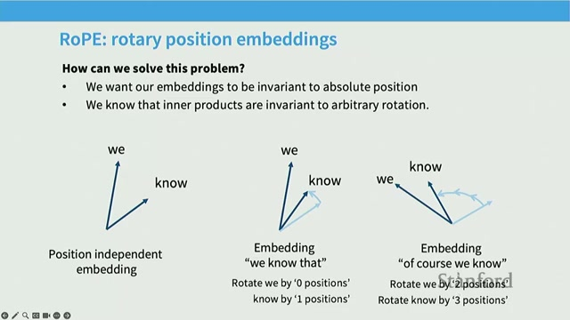
This segment explains different position embedding choices and why many models prefer RoPE (Rotary Positional Embeddings). RoPE applies rotations to query and key vectors so that inner products depend only on relative position differences. Importantly, RoPE is applied on queries and keys within the attention mechanism, rather than at the bottom token embeddings.
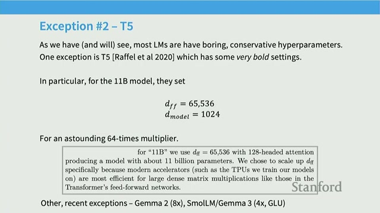
This section explains common choices for feed-forward size relative to model dimension and provides empirical evidence for those ratios. The usual choice is D_ff = 4 * D_model for non-gated MLPs. Gated models typically scale D_ff down, commonly to about 8/3 * D_model, to maintain similar parameter counts. Scaling-law experiments indicate that this area has a broad basin where many ratios perform well.
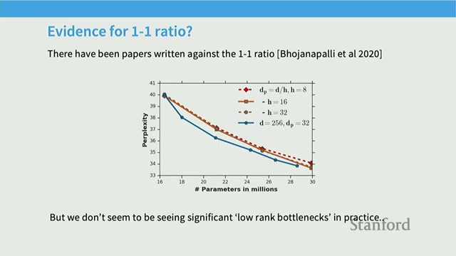
This discussion covers how to set head dimensions and the model's depth vs width (aspect ratio). The usual rule is to keep D_model = num_heads * head_dim (a 1:1 ratio so head_dim = D_model / num_heads). Empirical studies show an aspect-ratio sweet spot around ~100 hidden units per layer for many scales.
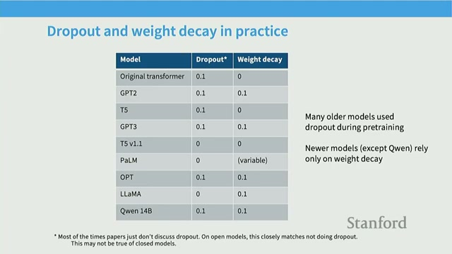
This section delves into the trends surrounding vocabulary sizes in natural language processing (NLP) and the evolving preferences for regularization techniques, specifically comparing dropout and weight decay.
Recent trends indicate that vocabulary sizes have been increasing, often ranging from 100,000 to 250,000 tokens. This is particularly evident in production and multilingual models. The reasons for this trend include:
In the realm of regularization, dropout has seen a decline in popularity, while weight decay remains a common choice. Here's why:
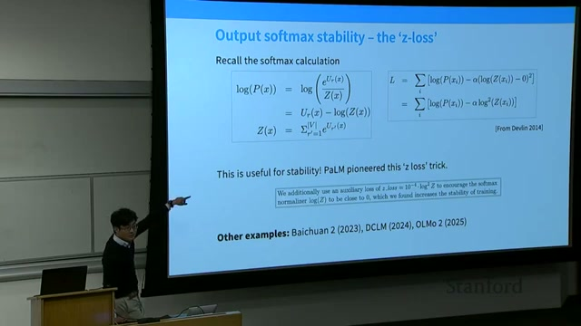
In this section, we explore how instability, characterized by large gradient spikes, can halt training processes. We will also discuss practical solutions to these issues.
Operations related to softmax—both in outputs and attention mechanisms—can lead to numerical and optimization challenges. Here are some common fixes:
It is essential to understand the following concepts:
Many recent models, such as PaLM, Gemma 2, and DCLM, have adopted Z-loss and QK-norm as practical solutions for stability issues. These fixes are particularly crucial when training large or multimodal models, or when introducing new modalities, as these changes can lead to sudden distribution shifts.
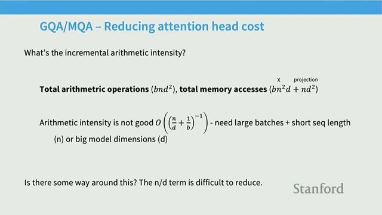
This closing section delves into the costs associated with inference and the various optimizations that can be employed to enhance performance. Key topics include:
These techniques aim to reduce memory movement during autoregressive generation while maintaining computational feasibility, especially for long contexts.
In autoregressive inference, the KV cache is utilized to compute attention one new row at a time. This alters memory access patterns and results in lower arithmetic intensity compared to training. Here are some critical points:
Generated automatically from lecture transcript and video analysis.